Don't Look Now! You're The Expert.
Megan Morsie | @megabyterose
About Me
Megan Morsie
Front End Web Developer
Brunswick, OH
Learned HTML & CSS on Neopets
BGSU - Visual Communication Technology
Working at a Host Travel Agency

#1 Trusted Reference of Web Devs Everywhere *
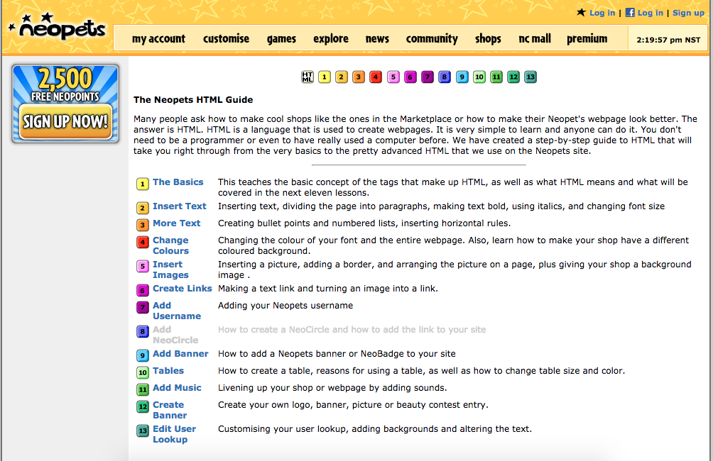
* This is not true and probably never has been or ever will be.
Discovering WordPress
A Whole New World
Working for a Host Travel Agency
Unique Challenges of In-House Developers
Why cover this topic?
Your Co-Workers Are Your Clients
Getting Projects You Might Normally Turn Down
- Cost - Time or Money
- Not the Direction You Want
Co-Workers Not Going Through Proper Channels

You Just Have to Make Things Work
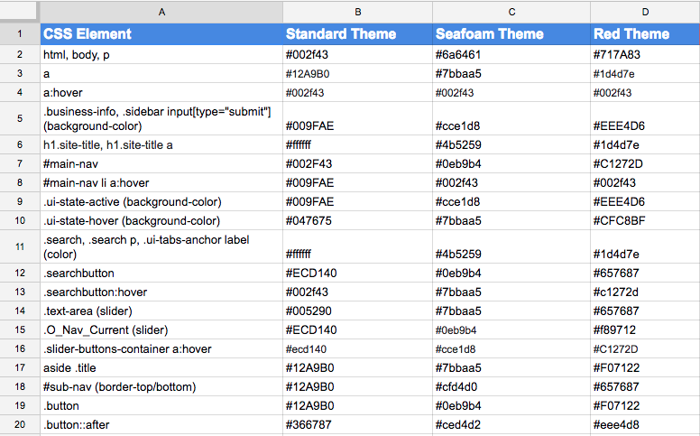
Being The One-Woman Show
Expected to Know About a Ton of Topics
Can Become a Spiral
Self-Driven Learning
Finding Resources Yourself
Setting Your Own Path
Selling Your Boss on The Value of Continued Education
Treehouse
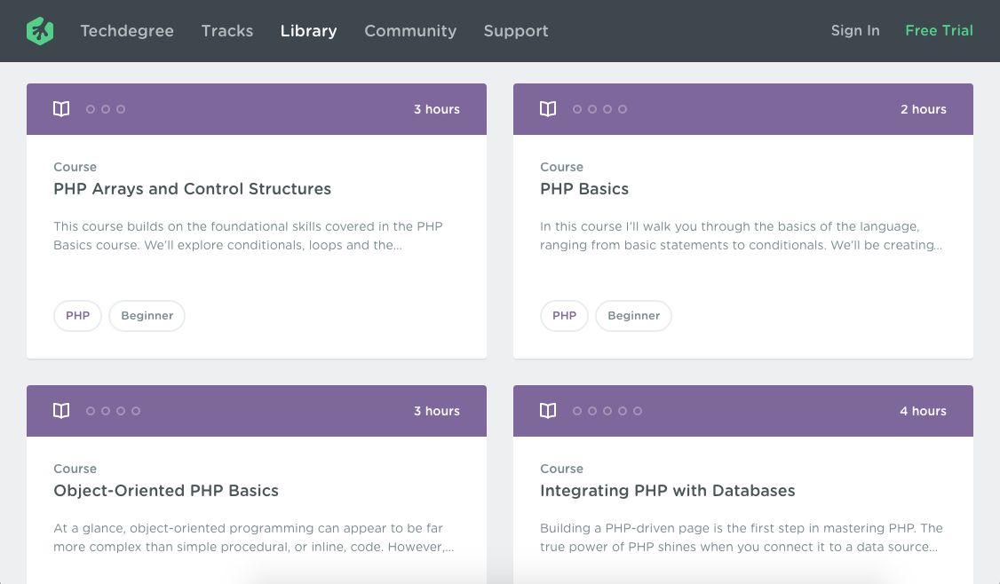
Codeschool
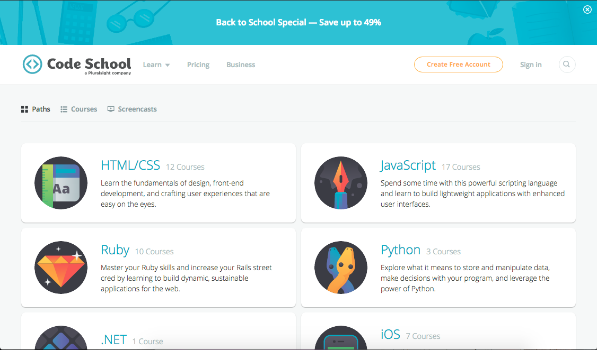
Codementor
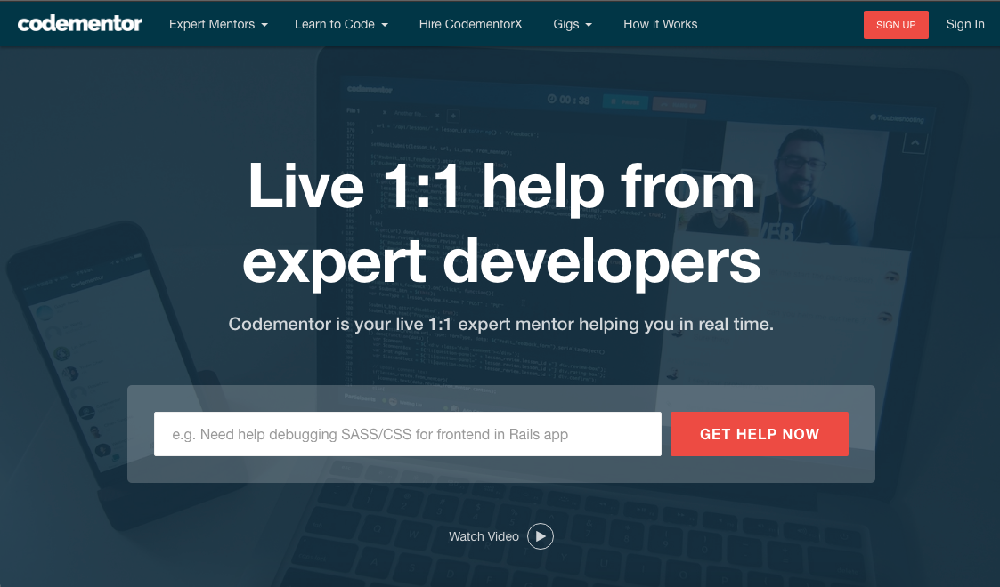
megabyterose.com/codementor
WordPress Development Stack Exchange
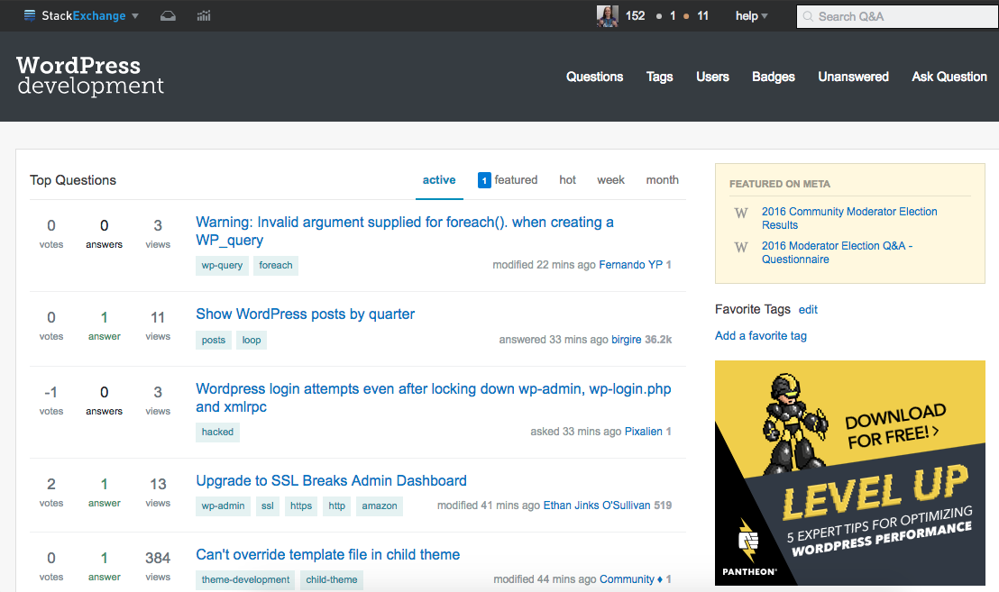
megabyterose.com/wpse
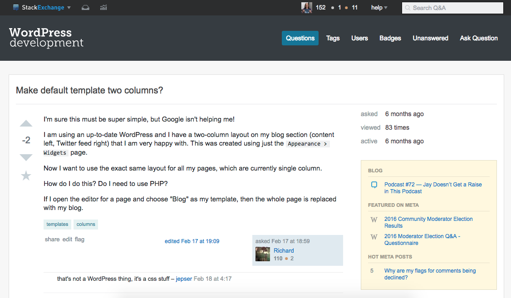
megabyterose.com/wpse
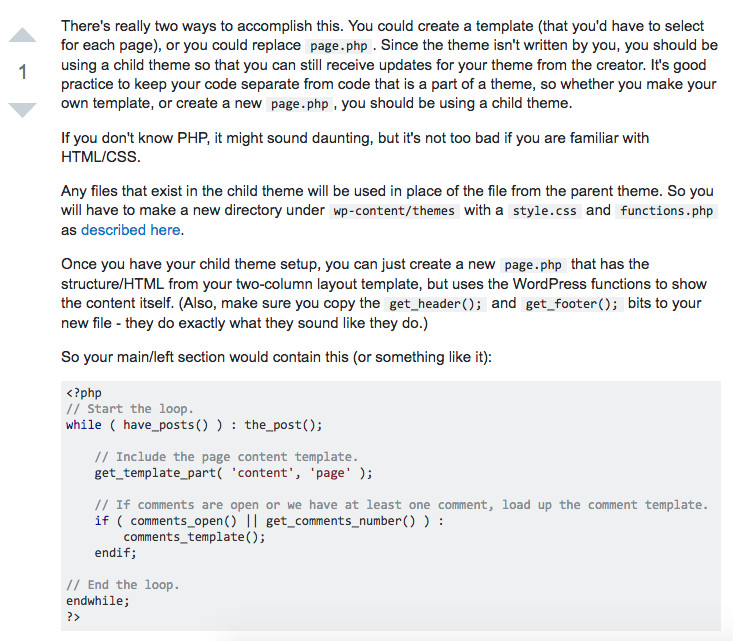
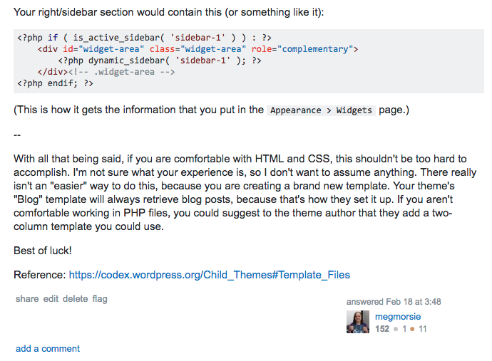
megabyterose.com/wpse
Staying on Track
Tracking Goals Using Google Sheets
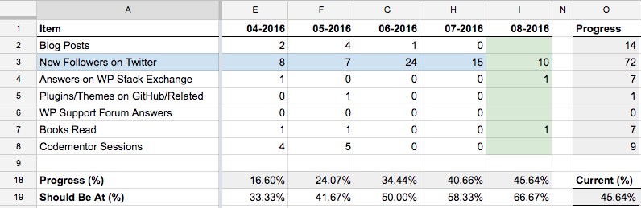
Finding Multiple People to Hold You Accountable
WordPress/Other Meetup
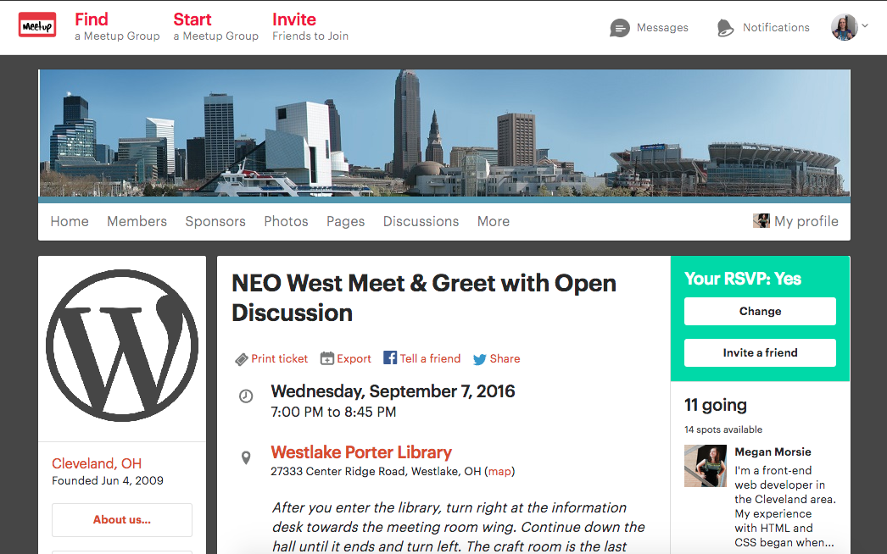
Staying Connected & Getting More Involved
- Invest Time Into The Community
- Volunteering, Speaking, Contributing
Thank You!
Find me on twitter @megabyterose
I blog at megabyterose.com
megabyterose.com/youre-the-expert